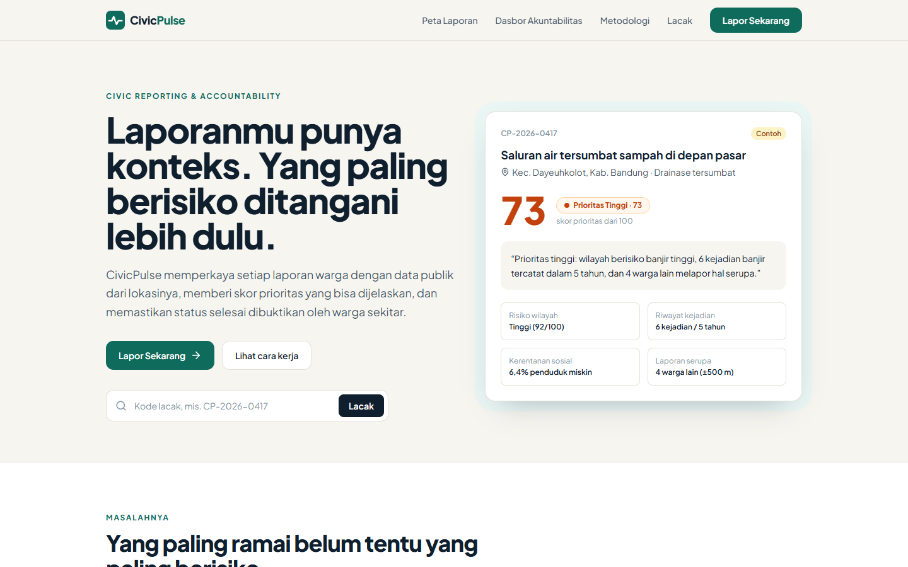
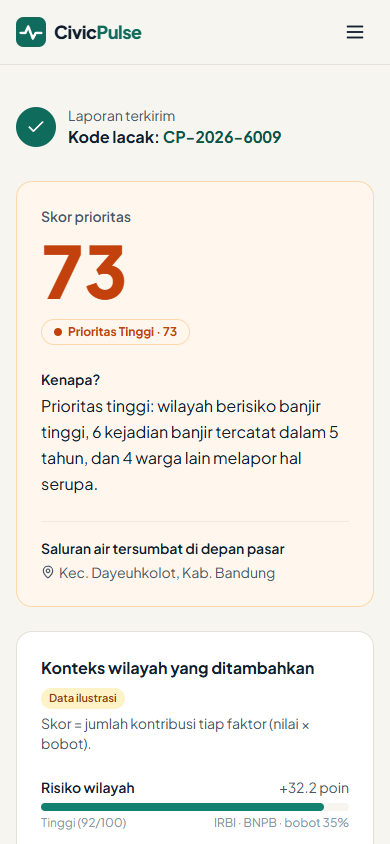
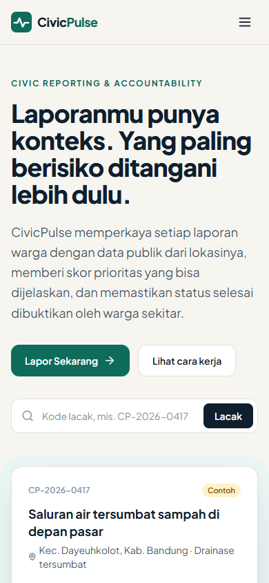
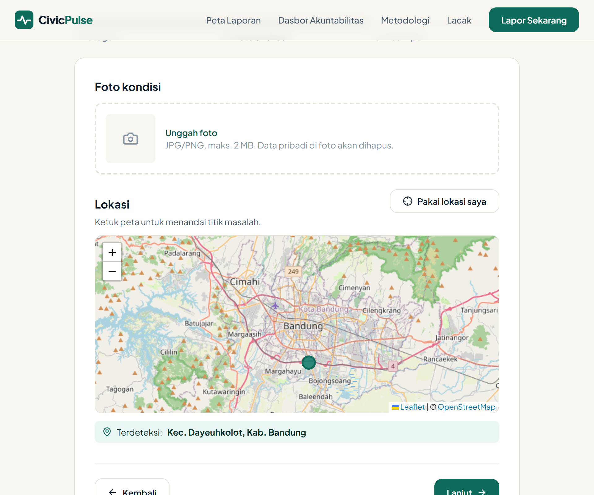
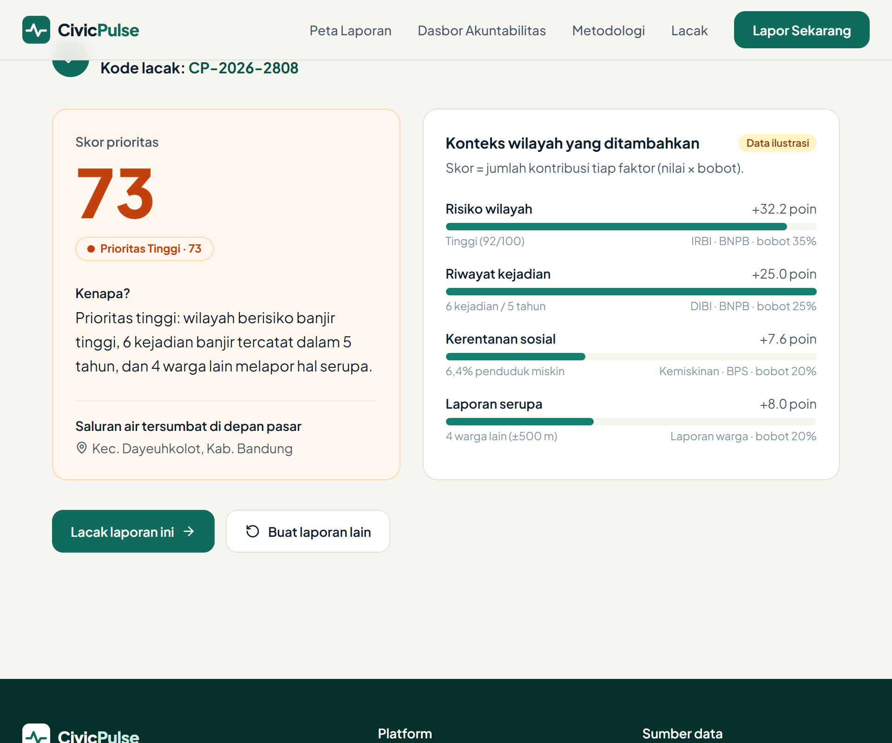
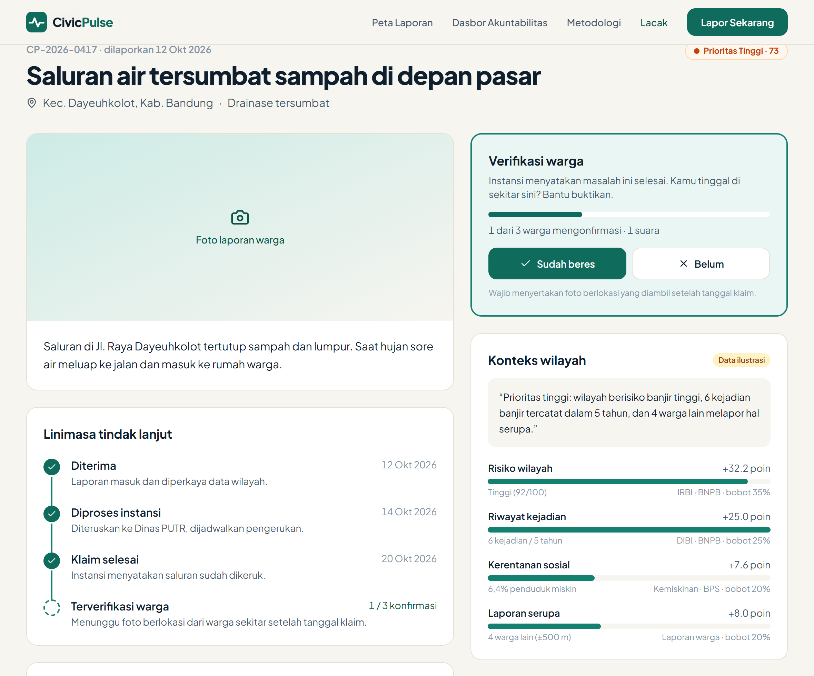

First Draft Submission · Web In Action
Setiap laporan warga punya konteks data publik, prioritas yang bisa dijelaskan, dan bukti penyelesaian dari warga sekitar.


01 · Latar belakang & masalah
Laporan warga tentang jalan rusak, banjir, atau drainase tersumbat masuk ke instansi berupa teks dan foto tanpa konteks. Dari sisi petugas, semua laporan terlihat sama penting. Akibatnya urutan penanganan mengikuti siapa yang paling vokal, bukan siapa yang paling membutuhkan.
Petugas tidak bisa membedakan laporan di wilayah rawan dan tidak rawan.
Yang paling banyak dukungan atau viral diproses duluan.
Wilayah rawan dan miskin, yang warganya jarang melapor, justru tertinggal.
Status selesai ditentukan sepihak oleh instansi, warga tidak bisa membuktikan.
02 · Tujuan & solusi
Kategori, foto, titik lokasi, deskripsi. < 60 detik.
Risiko bencana (IRBI), riwayat kejadian (DIBI), kemiskinan (BPS).
Skor 0–100 dan kalimat alasan. Rumus terbuka.
Linimasa status publik dan tanggapan instansi.
Selesai sah jika ≥ 3 warga sekitar kirim foto berlokasi.
Contoh keluaran sistem
“Prioritas tinggi: wilayah berisiko banjir tinggi, 6 kejadian banjir tercatat dalam 5 tahun, dan 4 warga lain melapor hal serupa.”
03 · Data publik & skor prioritas
| Data | Sumber & cakupan | Faktor |
|---|---|---|
| IRBI | BNPB · per kab/kota, 2015–2022 | Risiko wilayah |
| DIBI | BNPB · kejadian 1815–2021 | Riwayat kejadian |
| Kemiskinan | BPS · kab/kota, rilis 28 Nov 2025 | Kerentanan sosial |
| Laporan warga | CivicPulse · radius ±500 m, 30 hari | Laporan serupa |
| Anggaran | DJPK · tahun terbatas | Pembanding (lanjutan) |
Faktor kemiskinan sengaja dimasukkan agar wilayah miskin yang warganya jarang melapor tetap naik prioritasnya. Jenis bahaya menyesuaikan kategori (drainase → banjir, longsor → longsor). Bobot masih draft dan akan dikalibrasi.
04 · Sitemap
1. Kategori
2. Foto & lokasi (peta)
3. Deskripsi
→ Hasil skor + kode lacak
Konteks wilayah
Linimasa status
Tanggapan instansi
Verifikasi warga, +1
Sebaran laporan
Warna = prioritas
Filter kategori, status, wilayah
Peta kesenjangan
Daftar “Perlu Perhatian”
Waktu tangani & tingkat verifikasi
Rumus skor
Sumber & tahun data
Batasan, disclaimer
Antrean urut skor
Ubah status + bukti
Tanggapan publik
Beranda berisi: hero + ajakan lapor, kolom lacak kode, ilustrasi masalah, cara kerja 4 langkah, sumber data publik, alur akuntabilitas, CTA.
05 · Wireframe
Beranda — menjelaskan masalah dan cara kerja, langsung mengarahkan ke Lapor.
Lapor Masalah — 3 langkah, mobile-first, target < 60 detik.
05 · Wireframe
Detail / Lacak Laporan — transparansi tindak lanjut dan verifikasi warga.
Dasbor Akuntabilitas — membantu publik & pembuat kebijakan melihat kesenjangan.
06 · Fitur utama
Form 3 langkah: kategori, foto + titik di peta (atau GPS), deskripsi. Menghasilkan kode lacak.
Titik lokasi dicocokkan ke kecamatan, lalu ditempeli data risiko, riwayat kejadian, dan kemiskinan.
Skor 0–100, kalimat alasan otomatis, dan rincian kontribusi tiap faktor.
Linimasa publik: Diterima → Diproses → Klaim selesai → Terverifikasi warga.
Selesai sah jika mayoritas dari ≥ 3 warga sekitar mengirim foto berlokasi setelah tanggal klaim. Jika tidak, dibuka ulang.
Laporan sejenis dalam radius ±500 m / 30 hari digabung dan menambah skor.
Peta kesenjangan dan daftar wilayah rawan dengan laporan menumpuk dan lambat ditangani.
Antrean urut skor, hak jawab. Login tautan email, batas harian, tanpa NIK.
07 · Progres — screenshot halaman yang sudah dikerjakan
Desktop 1440 px — hero, kartu contoh laporan berkonteks, dan kolom lacak.

Mobile 390 px
07 · Progres — screenshot halaman yang sudah dikerjakan

Lapor · langkah 2 — foto & titik di peta

Hasil skor — alasan + rincian faktor

Detail laporan — linimasa & verifikasi